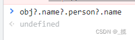
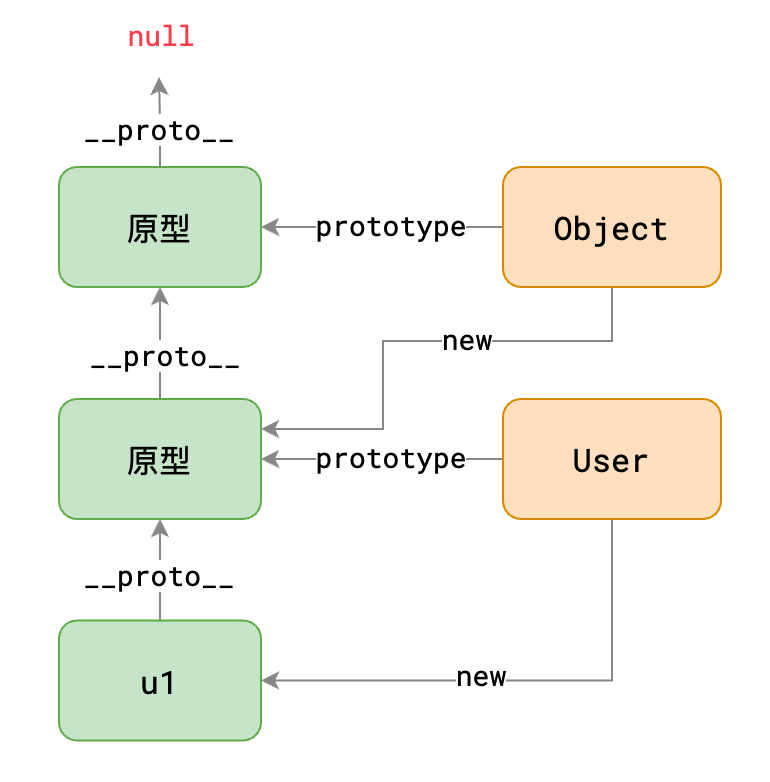

数据类型
基本数据类型
- String Number Boolean Null Undefined 属于基本数据类型
- 基本数据类型的值直接在栈内存中存储
- 值与值之间是独立存在，修改一个变量不会影响其他的变量
Null（空值）类型的值只有一个，就是 null,null 这个值专门用来表示一个为空的对象
使用 typeof 检查一个 null 值时，会返回 object
Undefined（未定义）类型的值只有一个，就 undefind
当声明一个变量，但是并不给变量赋值时，它的值就是 undefined
使用 typeof 检查一个 undefined 时也会返回 undefined
NaN 是一个特殊的数字，表示 Not A Number 使用 typeof 检查一个 NaN 也会返回 number
引用数据类型
Object 对象（包含普通对象、数组、函数）
{
'0': xxx,
'1': xxx,
'2': xxx,
'length': 3
}
- 对象是保存到堆内存中的，每创建一个新的对象，就会在堆内存中开辟出一个新的空间，而变量保存的是对象的内存地址（对象的引用），如果两个变量保存的是同一个对象引用，当一个通过一个变量修改属性时，另一个也会受到影响
var user1 = {
name: 'monica',
addr: {
province: '黑龙江',
city: '哈尔滨',
},
loves: ['音乐', '电影'],
};
var address = user1.addr;
//这句话会使 address 指向一个新的地址，从而与 user1 指向的对象没有关系
address = {
province: '四川',
city: '成都',
};
两者差异
- 原始数据类型直接存储在栈（stack）中，占据空间小，大小固定，属于被频繁使用的数据，所以存储在栈中；引用数据类型存储在堆（heap）中的对象，占据空间大，大小不固定，如果存储在栈中，将会影响程序运行的性能。引用数据类型在栈中存储了指针，该指针指向堆中该实体的起始地址，当解释器寻找引用值时，会首先检索其在栈中的地址，取得地址后，从堆中获得实体。
- 当比较两个基本数据类型的值时，就是比较值；而比较两个引用数据类型时，它是比较的对象的内存地址， 如果两个对象是一摸一样的，但是地址不同，它也会返回 false
- 基本数据类型按值传递，不可变，在 JS 中，任何看似对 string 值的 “修改” 操作，实际都是创建新的 string 值。任何方法都无法改变一个基本类型的值；引用类型的值是可变的，引用类型的值是同时保存在栈内存和堆内存中的对象。
数据表达
标识符
程序中有些可以自行命名的地方，称之为标识符
常见的标识符有：变量名、函数名、参数名
js 的标识符必须符合以下规则：
- 允许数字、字母、下划线、$符号
- 不得以数字开头
- 不能和关键字冲突
- 建议使用驼峰命名法
一个完整的程序中，会涉及成百上千的标识符，好的名称不仅可以减少名称冲突，更有利于程序的阅读和维护。
名称要做到望文知意
转义符
通过\来转义
| 转义符 | 含义 |
|---|---|
\\' |
普通英文单引号 |
\\" |
普通英文双引号 |
\\r |
回车 |
\\n |
换行 |
小技巧：常用
\r\n表示换行
数据运算与类型转换
转换为字符串
Number和Boolean可以采用这种方法
a = a.toString();
或者采用第二种
a = String(a);
转换为数字
使用 Number()函数
a = Number(a);
字符串 –> 数字
1.如果是纯数字的字符串，则直接将其转换为数字 2.如果字符串中有非数字的内容，则转换为 NaN 3.如果字符串是一个空串或者是一个全是空格的字符串，则转换为 0
布尔 –> 数字
true 转成 1
false 转成 0
null 转成 0
undefined –> 数字 NaN
parseInt()和 parseFloat()
这种方式专门用来对付字符串
parseInt()可以将一个字符串中的有效的整数内容去出来，然后转换为 Number
类型的隐式转换
每个运算符都有自己期望的数据，比如期望两端都是数字
一旦数据不符合运算符的期望，js 就会悄悄的对数据进行类型转换，把它转换成期望的值后进行运算。
值得注意的是，这种转换是 临时 的，并不会对原数据造成影响
在实际的开发中，我们可以利用类型的隐式转换完成以下功能：
var n = +a; // 不管a是啥，都会被转换成数字，保存到n中
var s = a + ""; // 不管a是啥，都会被转换成字符串，保存到s中
var b = !!a; // 不管a是啥，都会被转换成boolean，保存到b中
2的3次方可以写成
2 ** 3
运算符
|| 和 &&
if(1 && 2){
// 啰嗦的代码
if(exp){
n = exp;
}
else{
n = 1;
}
// 简洁的代码
n = exp || 1;
!!（强制类型转换）
转化成 true 或 false,可以用来判断是否有值
var a = undefined;
var b = null;
var c = "";
var d = 0;
var e = NaN;
var f = false;
console.log(!!a); //输出false
console.log(!!b); //输出false
console.log(!!c); //输出false
console.log(!!d); //输出false
console.log(!!e); //输出false
console.log(!!f); //输出false
其他都为true;
?. （可选链运算符）
在 javascript 中如果一个值为 null、undefined，直接访问下面的属性，
会报 UncaughtTypeError: Cannot read properties ofundefined 异常错误。
采用?.就可以解决这个问题

??（空值合并运算符）
?? 双问号后面是默认值（可常量、可变量）。
在 ?? 前面没有值得时候会默认 ?? 后边的值（类似于三木运算符中的:后面赋值）
和 || 运算符的区别：
|| 只会在左边的值为假值时返回右边的值 (0, ‘’, undefined, null, false 等都为假值)
?? 是在左边的值为 undefined 或者 null 时才会返回右边的值
??=为空值赋值运算符
??=为空值赋值运算符，当??=左边的的值为undefined或者null的时候,才会将右侧变量的值赋值给左侧变量.其他所有值都不会进行赋值
let b = '你好';
let a = 0
let c = null;
let d = ’123‘
b ??= a; // b = “你好”
c ??= d // c = '123'
三目运算
三目运算，判定 a，为真时表达式返回 b，否则返回 c
运算符：`? :`，格式`a ? b : c`
布尔判定
//可将a转化为布尔
a = Boolean(a);
所有需要判断真假的地方都会使用下面的规则
| 数据 | 判定 |
|---|
| falsenullundefined0NaN'' | false |
| 剩余所有数据（对象） | true |
对象
介绍
所有的对象都是通过构造函数的方式来创建的（{}，数组，函数都是对象）
对象属于一种复合的数据类型，在对象中可以保存多个不同数据类型的属性。
对象的分类 1.内建对象
由 ES 标准中定义的对象，在任何的 ES 的实现中都可以使用
- 比如：Math String Number Boolean Function Object
alert(Math.ceil(x)); //13
2.宿主对象
- 由 JS 的运行环境提供的对象，目前来讲主要指由浏览器提供的对象
- 比如 BOM DOM 3.自定义对象
- 由开发人员自己创建的对象
创建对象
对象，数组，函数
// 语法糖
// var obj = {
// a: 1,
// b: 2,
// };
// Object是一个函数
// var obj = new Object(); // 创建一个空对象
// obj.a = 1;
// obj.b = 2;
// var arr = [1, 2, 3];
// var arr = new Array(1, 2, 3); // 创建一个数组
function sum(a, b) {
return a + b;
}
// var sum = new Function('a', 'b', 'return a+b');
console.log(sum(1, 2));
对象的属性值可以是任何的数据类型，也可以是个函数
obj.sayName = function(){
console.log(obj.name);
};
作用域
全局作用域
- 在全局作用域中有一个全局对象 window
- 创建的变量都会作为 window 对象的属性保存
- 创建的函数都会作为 window 对象的方法保存
- 在页面的任意的部分都可以访问的到
- 在全局作用域中无法访问到函数作用域的变量
函数作用域
- 调用函数时创建函数作用域，函数执行完毕以后，函数作用域销毁
- 每调用一次函数就会创建一个新的函数作用域，他们之间是互相独立的
- 在函数作用域中可以访问到全局作用域的变量
- 当在函数作用域操作一个变量时，它会先在自身作用域中寻找，如果有就直接使用
- 如果没有则向上一级作用域中寻找，直到找到全局作用域，如果使用了上级的作用域则形成了闭包
- 如果全局作用域中依然没有找到，则会报错 ReferenceError
- 在函数中要访问全局变量可以使用 window 对象
- 内部作用域能访问的外部，取决于函数定义的位置，和调用无关
全局对象
无论是浏览器环境，还是 node 环境，都会提供一个全局对象
- 浏览器环境：window
- node 环境：global
全局对象有下面几个特点：
全局对象的属性可以被直接访问
给未声明的变量赋值，实际就是给全局对象的属性赋值
永远别这么干
所有的全局变量、全局函数都会附加到全局对象
这称之为全局污染，又称之为全局暴露，或简称污染、暴露
如果要避免污染，需要使用立即执行函数改变其作用域
立即执行函数又称之为 IIFE，它的全称是 Immediately Invoked Function Expression
IIFE 通常用于强行改变作用域
this
this 不能在执行期间被赋值，并且在每次函数被调用时 this 的值也可能会不同
在函数中使用 this，它的指向完全取决于函数是如何被调用的
| 调用方式 | 示例 | 函数中的 this 指向 |
|---|---|---|
| 通过 new 调用 | new method() |
新对象（{}） |
| 直接调用 | method() |
全局对象 |
| 通过对象调用 | obj.method() |
前面的对象 |
| call | method.call(ctx) |
call 的第一个参数 |
| apply | method.apply(ctx) |
apply 的第一个参数 |
call 与 apply
function m(a, b) {
console.log(this, a, b);
}
var arr = {};
// m.call(arr, 1, 2); // 调用m函数，让它里面的this指向arr
//call与apply的不同是参数的传递方式
m.apply(arr, [1, 2]);
原型，原型链
原型（prototype）
//若用这种方式创建，等于说每个实例u1,u2,u3都创建了sayHi这个对象，于是就出现了冗余，
//内存空间的浪费
function User(name, age) {
this.name = name;
this.age = age;
this.sayHi = function () {
console.log("你好，我是" + this.name + "，今年" + this.age + "岁了");
};
}
var u1 = new User("monica", 17);
var u2 = new User("邓哥", 77);
var u3 = new User("成哥", 18);
//利用原型可让所有的实例都使用同一个方法
User.prototype.sayHi = function () {
console.log("你好，我是" + this.name + "，今年" + this.age + "岁了");
};

原型
每个函数都会自动附带一个属性prototype，这个属性的值是一个普通对象，称之为原型对象实例
由构造函数创建的对象，instance，通过new产生的对象称之为实例。由于 JS 中所有对象都是通过
new产生的，因此，严格来说，JS 中所有对象都称之为实例隐式原型
每个实例都拥有一个特殊的属性__proto__，称之为隐式原型，它指向构造函数的原型
这一切有何意义？
当访问实例成员时，先找自身，如果不存在，会自动从隐式原型中寻找
这样一来，我们可以把那些公共成员，放到函数的原型中，即可被所有实例共享

原型就是函数的方法和属性，js 内置类会有自己的方法和属性
显式原型和隐式原型
- 每个函数 function 都有一个 prototype，即显式原型（函数）
- 每个实例对象都有一个proto，可称为隐式原型(实例)
function Fn() {
}
var fn = new Fn()
console.log(Fn.prototype, fn.__proto__)
console.log(Fn.prototype===fn.__proto__)
原型链
prototype 是一个对象，里面还有 prototype
当我们访问对象的一个属性或方法时，它会先在对象自身中寻找，如果有则直接使用， 如果没有则会去原型对象中寻找，如果找到则直接使用,于是就这样一直找下去，也就是我们平时所说的原型链的概念。
特点
JavaScript 对象是通过引用来传递的，我们创建的每个新对象实体中并没有一份属于自己的原型副本。当我们修改原型时，与之相关的对象也会继承这一改变。
当我们需要一个属性的时，Javascript 引擎会先看当前对象中是否有这个属性， 如果没有的话， 就会查找他的 Prototype 对象是否有这个属性，如此递推下去，一直检索到 Object 内建对象。
所有的对象都是通过**new 函数**的方式创建的
var u1 = new User("邓", "旭明"); // 对象 u1 通过 new User 创建
var u2 = {
// 对象 u2 通过 new Object 创建
firstName: "莫",
lastName: "妮卡",
};
// 等效于
var u2 = new Object();
u2.firstName = "莫";
u2.lastName = "妮卡";
上面的代码形成的原型图如下

原型对象本身也是一个对象，默认情况下，是通过new Object创建的，因此，上面的两幅原型图是可以发生关联的

Object.prototype.__proto__比较特殊，它固定指向 null
可以看出，u1 的隐式原型形成了一个链条，称之为原型链
当读取对象成员时，会先看对象自身是否有该成员，如果没有，就依次在其原型链上查找
完整的链条

更改构造函数的原型会对所有原型链上有该构造函数的原型的对象产生影响
继承
视频网站有两种会员：
- 普通会员
- 属性：用户名、密码
- 方法：观看免费视频
- VIP 会员
- 属性：普通会员的所有属性、会员到期时间
- 方法：普通会员的所有方法、观看付费视频
如果我们需要使用构造函数来创建会员，如何书写构造函数才能实现上面的需求？
// 普通会员的构造函数
function User(username, password) {
this.username = username;
this.password = password;
}
User.prototype.playFreeVideo = function () {
console.log("观看免费视频");
};
// VIP会员的构造函数
function VIPUser(username, password, expires) {
this.username = username;
this.password = password;
this.expires = expires;
}
VIPUser.prototype.playFreeVideo = function () {
console.log("观看免费视频");
};
VIPUser.prototype.playPayVideo = function () {
console.log("观看付费视频");
};
上面的代码出现了两处重复代码：
- VIPUser 的构造函数中包含重复代码
this.username = username;
this.password = password;
这段代码和 User 构造函数并没有区别，可以想象得到，将来也不会有区别，即：普通用户该有的属性，VIP 用户一定有
- VIPUser 的原型上包含了重复代码
VIPUser.prototype.playFreeVideo = function () {
console.log("观看免费视频");
};
这个方法和 User 上的同名方法逻辑完全一致，可以想象得到，将来也不会有区别，即：普通用户该有的方法，VIP 用户一定有
处理构造器内部的重复
可以将 VIPUser 构造器改写为
function VIPUser(username, password, expires) {
User.call(this, username, password);
this.expires = expires;
}
处理原型上的重复
只需要将原型链设置为下面的结构即可
方法一
仅需一句代码即可
Object.setPrototypeOf(VIPUser.prototype, User.prototype);
封装继承
function inherit(Child, Parent) {
// 在原型链上完成继承
Object.setPrototypeOf(Child.prototype, Parent.prototype);
}
方法二
VipUser.prototype = new User();
VipUser.prototype = new User();
VipUser.prototype.constructor = VipUser;
//新增方法
VipUser.prototype.showLevel = function () {
console.log(this.level);
};
至此，完美的解决了之前提到的两处重复代码的问题
子类的实例自动拥有父类的所有成员
继承具有两个特性：
- 单根性：子类最多只有一个父类
- 传递性：间接父类的成员会传递到子类中